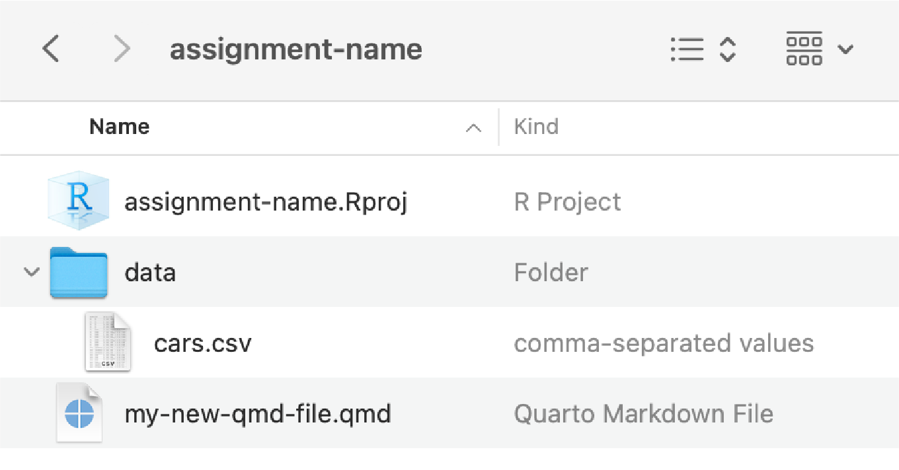
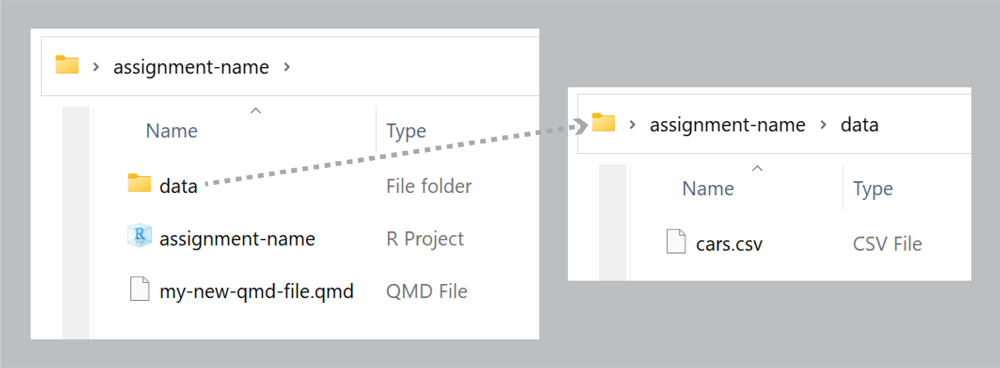

mpg |>
group_by(class) |>
summarize(
avg_mpg = mean(cty),
num_cars = n()
)
## # A tibble: 7 × 3
## class avg_mpg num_cars
## <chr> <dbl> <int>
## 1 2seater 15.4 5
## 2 compact 20.1 47
## 3 midsize 18.8 41
## 4 minivan 15.8 11
## 5 pickup 13 33
## 6 subcompact 20.4 35
## 7 suv 13.5 62Session 1 tips and FAQs
FAQs
Hi everyone!
I just finished grading Exercise 1 and you’re doing great work!
I have just a few important FAQs and tips I’ve been giving as feedback to many of you:
Why does it matter where we put files like cars.csv?
Oh man, this is one of the trickiest parts of the class, and it’s all Google’s fault.
Google, Apple, and the (over)simplification of file systems
There’s a bizarre (and well documented!) generational blip of people having a more intuitive understanding of files and folders. Before the 1980s, people learning how to use computers had to learn how files and folders worked because it was a brand new metaphor for thinking about items on computers. From the 1990s–2000s, sorting and moving and copying files and folders was a standard part of working with computers.
Then, in the 2010s, Google created Google Drive to simplify file management. All your Google documents are in one big easily searchable bucket of files, and while it’s possible to create folders on Google Drive, they actually discourage it. If you went to K–12 in the 2010s, you likely used Google Classroom, and many of those installations actually had Google Drive folders disabled so it was impossible to even create folder structures.
Your phone also completely hides the file system on purpose—Apple and Google wanted to simplify how things are stored on phones, so when you take a picture, that file goes somewhere, but you don’t need to know where.
As a result, people who learned how to use computers in the 1990–2000s tend to understand things like nested folders, absolute and relative paths, file extensions, and so on. As a gross oversimplification, Millennials and younger Gen X tend to use folders; Boomers/older Gen X and Gen Z do not.
It’s like one of those goofy internet generational tests: Do you put all your school-related files in carefully nested folders like Documents/GSU/Summer 2024/PMAP 8551/Assignment 1? You’re probably a Millennial. Do you put all your school-related files in one big Documents/GSU folder, or just in your Documents folder, or just wherever your browser decides to stick downloaded stuff? You’re probably Gen Z.
R (and every other programming language, and all computers in general) really cares about where your files are stored on your computer. Programs on your computer can’t read your mind—they only know where files are if you reference them with good consistent names.
In exercise 1, I had you create a folder on your computer somewhere and then create another folder in there named “data”, and you were supposed to put cars.csv inside that. You should have had a folder structure like this:


When you downloaded cars.csv your browser put that file in your Downloads folder (on macOS that’s at /Users/yourname/Downloads/; on Windows that’s at C:\User\yourname\Downloads\.) If you keep that file in Downloads, and you try running this:
read_csv("cars.csv")…it won’t work because that file is actually in your Downloads folder and R is looking for it in the same folder as your .qmd file. You need to move that file out of Downloads.
(Technically you don’t have to; you could do read_csv("/Users/yourusername/Downloads/cars.csv"), but that’s BAD because if you ever move that file out of Downloads, your code will break.)
I had you create a folder named “data” to hold cars.csv, but technically you don’t have to do that. If you move cars.csv to the same folder as your .qmd file, it will be fine—your code just needs to say read_csv("cars.csv"). It’s just generally good practice to store all the data files in their own folder, for the sake of organization. You can name folders whatever you want too—like, you could put it in a folder in your project named “my-neat-data-stuff”, and then load it with read_csv("my-neat-data-stuff/cars.csv"). That’s fine too.
How does group_by() work? Why did we have to group by class and not cty and class?
A bunch of you did something like this for the last part of Exercise 1:
cars |>
group_by(cty, class) |>
summarize(avg_mpg = mean(cty))While that technically gave you an answer, it’s wrong.
As you saw in the Primers, group_by() puts your data into groups behind the scenes, and summarize() collapses those groups into single values.
For instance, if you group by class, R will put all the 2seaters together, all the compacts together, all the suvs together, and so on. Then when you use summarize(), it will calculate the average for each of those groups:
There are 5 two-seater cars with an average MPG of 15.4; 47 compact cars with an average MPG of 20.13; and so on.
If you group by class and cty, R will create groups of all the unique combinations of car class and city MPG: all the compact cars with 18 MPG, all the compact cars with 20 MPG, all the midsize cars with 15 MPG, and so on. Then when you use summarize(), it will calculate the average for each of those groups:
mpg |>
group_by(class, cty) |>
summarize(
avg_mpg = mean(cty),
num_cars = n()
)
## # A tibble: 61 × 4
## # Groups: class [7]
## class cty avg_mpg num_cars
## <chr> <int> <dbl> <int>
## 1 2seater 15 15 3
## 2 2seater 16 16 2
## 3 compact 15 15 2
## 4 compact 16 16 3
## 5 compact 17 17 4
## 6 compact 18 18 7
## 7 compact 19 19 5
## 8 compact 20 20 5
## 9 compact 21 21 12
## 10 compact 22 22 3
## # ℹ 51 more rowsThe average MPG for the 3 two-seater cars with 15 MPG is, unsurprisingly, 15 MPG, since every car in that group has a mileage of 15 MPG.
Check out these animations to help with the intuition of grouping, like these:
Can we use ChatGPT? Can you even tell if we do?
Lots of you included code directly from ChatGPT. I can typically tell; it has a certain style to it and often gives you extraneous code that you don’t actually need to use. Like this—this comes right from ChatGPT:
# Load the required libraries
library(dplyr)
# Read a file named cars.csv into the R session
data <- read.csv("data/cars.csv")
# Calculate the average value of cty by class
average_cty_by_class <- data %>%
group_by(class) %>%
summarize(average_cty = mean(cty, na.rm = TRUE))
# Show the results
print(average_cty_by_class)
The “tells”
Here’s how I can tell that that ↑ code comes from an LLM:
- Comments at every stage
read.csv()instead ofread_csv(),- The older
%>%pipe instead of the newer|>pipe na.rm = TRUEinsidemean()- Using
print()to show the created object
I am not anti-ChatGPT. I often use LLMs like ChatGPT and GitHub Copilot in my own work (GitHub Copilot in particular is really really good for code—it’s better than ChatGPT, and free for students). These tools are phenomenal resources when you already know what you are doing.
However, using ChatGPT and other LLMs when learning R is actually really detrimental to learning, especially if you just copy/paste directly from what it spits out. It will give you code that is wrong or that contains extra stuff you don’t need, and if you don’t know enough of the language you’re working with, you won’t understand why or what’s going on.
Using ChatGPT with R requires a good baseline knowledge of R to actually be useful. A good analogy for this is with recipes. ChatGPT is really confident at spitting out plausible-looking recipes. A few months ago, for fun, I asked it to give me a cookie recipe. I got back something with flour, eggs, sugar, and all other standard-looking ingredients, but it also said to include 3/4 cup of baking powder. That’s wild and obviously wrong, but I only knew that because I’ve made cookies before. I’ve seen other AI-generated recipes that call for a cup of horseradish in brownies or 21 pounds of cabbage for a pork dish. A few weeks ago Google’s AI recommended adding glue to pizza sauce to stop the cheese from sliding off. Again, to people who have cooked before, these are all obviously wrong (and dangerous in the case of the glue!), but to a complete beginner, these look like plausible instructions.
In general, don’t ever just copy/paste from ChatGPT and hope it runs. If you do use these tools, make sure you look through the code and see what it says first—try to understand what each part is doing. For example, if it spits out summarize(avg_mpg = mean(cty, na.rm = TRUE)), and you don’t know what that na.rm = TRUE thing means, look at the help page for mean() and see what na.rm actually does so you can decide if you really need to use it or not.
Rendered document format for iCollege
Quarto is great and wonderful in part because you can write a document in one .qmd file and have it magically turn into an HTML file, a Word file, or a PDF (or if you want to get extra fancy later, a slideshow, a dashboard, or even a full website).
iCollege doesn’t like HTML files, though. It won’t show images that get uploaded because of weird server restrictions or something. So when you submit your exercises, make sure you render as PDF or Word.
I’d recommend rendering as HTML often as you work on the exercise. Rendering as PDF takes a few extra seconds, and rendering as Word is a hassle because Word gets mad if you have a previous version of the document open when rendering. HTML is pretty instantaneous. When I work on Quarto files, I put a browser window on one of my monitors and RStudio on the other and render and re-render often to HTML while working. Once I’m done and the document all works and the images, tables, text, etc. are all working, I’ll render as PDF or Word or whatever final format I want.